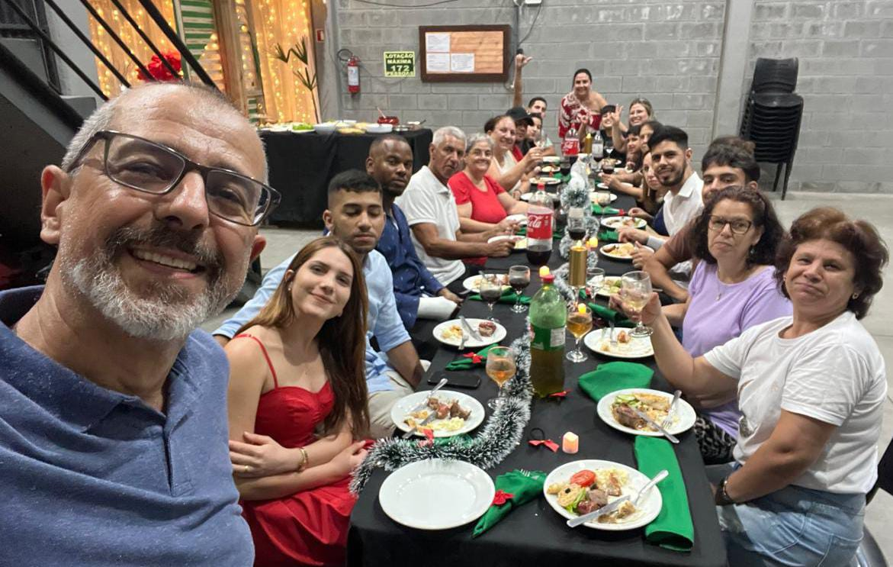
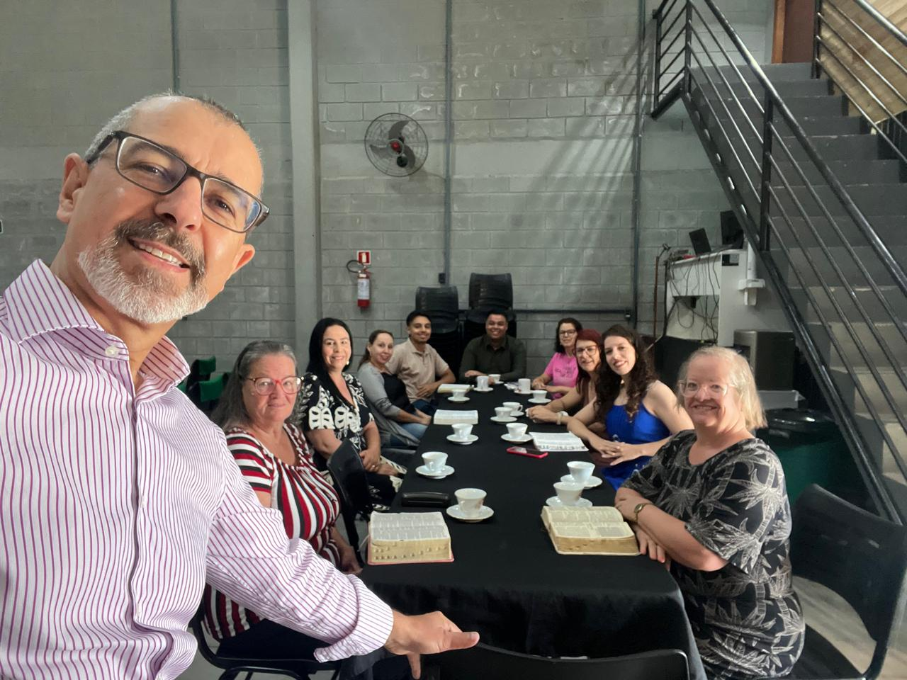
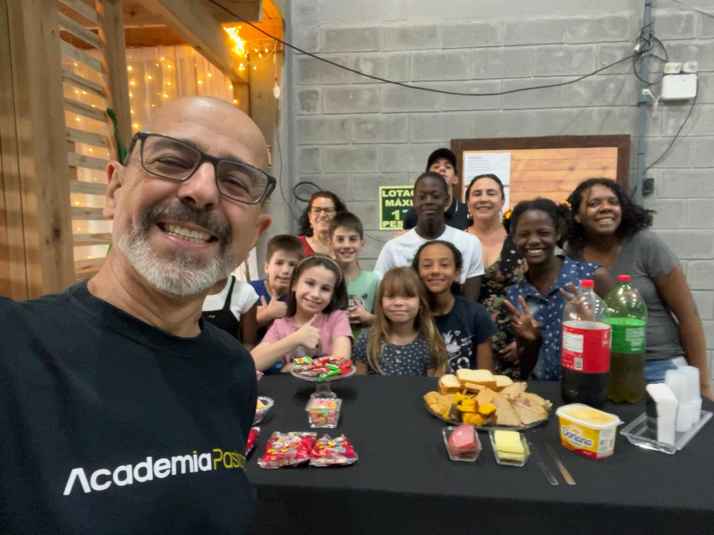

Sobre Nós
Somos uma igreja focada e centrada unicamente em Jesus Cristo, hoje e para sempre, construindo uma comunidade de discípulos e ensinando-os a viver como Jesus , para a glória de Deus Pai.
Somos, simplesmente, uma igreja de Jesus — um lugar de fé, esperança e amor para todas as pessoas.
Galeria


